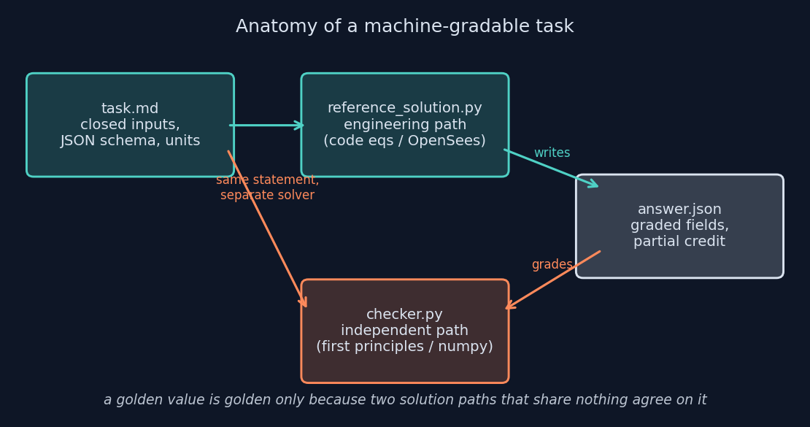
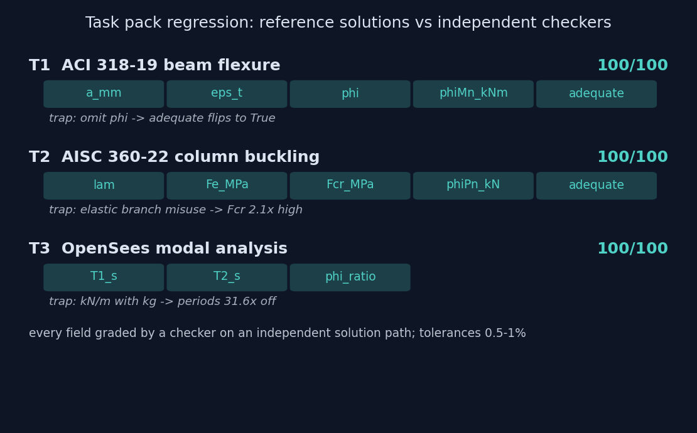

0.5–1%
FIELD TOLERANCES
Three structural analysis tasks packaged the way an AI training pipeline needs them: a closed problem statement, a reference solution, and a checker that grades a JSON deliverable on an independent solution path. Each task embeds a plausible wrong method the tolerances are tuned to catch, and the pack ships with a one-command regression proving every reference scores 100/100 under its own checker.
A task for AI training or evaluation is not a homework problem. It must be solvable without judgment calls, gradable without a human, and hard to pass by accident. That forces a specific anatomy: every input closed inside the statement, a deliverable that is a JSON file with fixed field names and stated units, and a checker whose golden values come from somewhere other than the reference solution's code path. The checker's exit code makes the whole thing drop into CI or a reinforcement learning reward loop unchanged.

| Task | Graded fields | The embedded trap |
|---|---|---|
| T1 · ACI 318-19 beam flexure | a, eps_t, phi, phiMn, adequate | The section is deliberately inadequate. Omitting phi gives Mn = 492.8 > Mu = 460 kN·m and flips the boolean. |
| T2 · AISC 360-22 column buckling | lambda, Fe, Fcr, phiPn, adequate | Slenderness 53.8 is inelastic. Applying the elastic branch anyway gives Fcr = 597 MPa against the correct 279, a 2.1x error. |
| T3 · OpenSees modal analysis | T1_s, T2_s, phi_ratio | Mixing kN/m with kg moves both periods by 31.6x; taking eigenvalues in solver order swaps the modes. |
T3 makes the independence principle concrete: the reference solution builds a two-story shear building in OpenSeesPy and runs an eigen analysis; the checker solves the 2x2 generalized eigenproblem in closed form with numpy and never imports OpenSees. Its goldens are T1 = 0.3033 s, T2 = 0.1227 s, and a fundamental mode shape ratio of 1.912, and both paths agree to well inside the 0.5% band.

Every tolerance in the pack passes the same test: at least one known-wrong method must fall outside it, and every defensible correct method must fall inside it. Code-equation quantities get 1%, loose enough for rounding-step differences between correct solutions. Modal results get 0.5%, because eigensolvers agree far tighter than hand methods. Booleans are exact, because a capacity check is a decision and there is no almost adequate.
Each trap is a real misconception with a distinctive numeric signature, so a failed field localizes what the solver got wrong instead of just failing it. That is what makes these usable as reward signals for training, not only as pass-fail walls for evaluation. Partial credit sits on intermediate quantities in solution order for the same reason.
I am a mechanical engineer working these problems as computational mechanics against published code equations, not a licensed structural engineer, and the tasks are framed accordingly: closed numerical problems with machine-verifiable answers, not design sign-off. The pack's full design rationale, including the anti-pattern list it was built against, is in DESIGN_NOTES.md in the repository.
pip install openseespy numpy
python grade_all.py # runs every reference through its checker
# exit 0 iff the whole pack scores 100/100